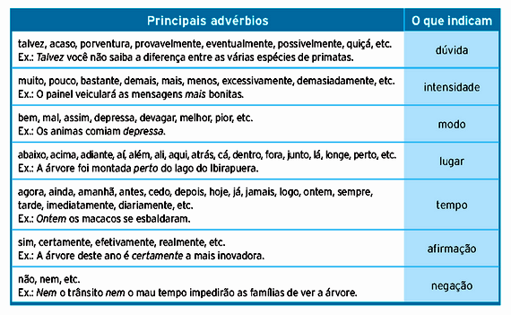

Morfologia é o ramo da gramática que estuda a classe das palavras, isto é, a natureza delas.
Em português, essas classes são dez: seis variáveis, e quatro invariáveis.
São variáveis os artigos, adjetivos, numerais, pronomes, substantivos e verbos. Já invariáveis são os advérbios, as conjunções,
as interjeições e as preposições. Isto é, são palavras que não vão para o plural, nem para o feminino.
Os advérbios são palavras que modificam um verbo, um adjetivo ou outro advérbio. São flexionados em grau (comparativo e superlativo) e divididos em: advérbios de modo, intensidade, lugar, tempo, negação, afirmação, dúvida.
Advérbio de Modo:
Bem, mal, assim, adrede, melhor, pior, depressa, devagar, acinte, debalde e grande parte das palavras que terminam em "-mente":
cuidadosamente, calmamente, tristemente, dentre outros.
Exemplos:
Fui bem na prova.
Estava andando depressa por causa da chuva.
Advérbio de Intensidade:
Muito, demais, pouco, tão, quão, demasiado, bastante, imenso, demais, mais, menos, quanto, quase, tanto, assaz, tudo, nada, todo.
Exemplos:
Comeu demasiado naquele almoço.
Ela gosta bastante dele.
Advérbio de Lugar:
Aí, aqui, cá, lá, ali, adiante, abaixo, embaixo, acima, adentro, dentro, afora, fora, defronte, atrás, detrás , atrás, além, aquém,
antes, algures, nenhures, alhures, aonde, longe, perto.
Exemplos:
Minha casa é ali.
O livro está embaixo da mesa.
Advérbio de Tempo:
Hoje, já, afinal, logo, agora, amanhã, amiúde, antes, ontem, tarde, breve, cedo, depois, enfim, entrementes, ainda, jamais, nunca, sempre,
doravante, outrora, primeiramente, imediatamente, antigamente, provisoriamente, sucessivamente, constantemente.
Exemplos:
Ontem estivemos numa reunião de trabalho.
Sempre estamos juntos.
Advérbio de Negação:
Não, nem, tampouco, nunca, jamais.
Exemplos:
Jamais reatarei meu namoro com ele.
Não saiu de casa naquela tarde.
Advérbio de Afirmação:
Sim, deveras, indubitavelmente, decididamente, certamente, realmente, decerto, certo, efetivamente.
Exemplos:
Certamente passearemos nesse domingo.
Ele gostou deveras do presente de aniversário.
Advérbio de Dúvida:
Possivelmente, provavelmente, acaso, porventura, quiçá, será, talvez, casualmente.
Exemplos:
Provavelmente irei ao banco.
Quiçá chova hoje.

No Grau Comparativo, o advérbio pode caracterizar relações de igualdade, inferioridade ou superioridade.
Igualdade: formado por "tão + advérbio + quanto" (como), por exemplo: Joaquim é tão baixo quanto Pedro.
Inferioridade: formado por "menos + advérbio + que" (do que), por exemplo: Joana é menos alta que Sílvia.
Superioridade:
a)analítico: formado por "mais + advérbio + que" (do que), por exemplo: Ana é mais alta que Carolina.
b)sintético: formado por "melhor ou pior que" (do que), por exemplo: Paula tirou nota melhor que Júlia na prova.
Analítico: quando acompanhado de outro advérbio, por exemplo: Isabel fala muito baixo.
Sintético: quando é formado por sufixos, por exemplo: Isabel fala baixíssimo.
Preposição é a palavra invariável que liga dois termos da oração numa relação de subordinação donde, geralmente, o segundo termo subordina o primeiro.
Preposição de lugar: O navio veio "de" São Paulo.
Preposição de modo: Os prisioneiros eram colocados "em" fila.
Preposição de tempo: "Por" dois anos ele viveu aqui.
Preposição de distância: "A" cinco quilômetros daqui passa uma estrada.
Preposição de causa: "Com" a seca, o gado começou a morrer.
Preposição de instrumento: Ele cortou a árvore "com" o machado.
Preposição de finalidade: A praça foi enfeitada "para" a festa.
Preposições Essenciais: são as palavras que só funcionam como preposição, a saber: a, ante, após, até, com, contra, de, desde, em, entre, para, per,
perante, por, sem, sob, sobre, trás.
Preposições Acidentais: são as palavras de outras classes gramaticais que, em certas frases funcionam como preposição, a saber: afora, como, conforme, consoante, durante, exceto, mediante,
menos, salvo, segundo, visto etc.
A locução prepositiva é formada por duas ou mais palavras com o valor de preposição, sempre terminando por uma preposição, por exemplo:
abaixo de, acima de, a fim de, além de, antes de, até a, depois de, ao invés de, ao lado de, em que pese a, à custa de, em via de, à volta com,
defronte de, a par de, perto de, por causa de, através de, etc.
Importante notar que, algumas preposições podem aparecer combinadas com outras palavras. Assim, quando na junção dos termos não houver perda
de elementos fonéticos, teremos uma combinação, por exemplo:
ao (a + o)
aos (a + os)
aonde (a + onde
Por conseguinte, quando da junção da preposição com outra palavra houver perda fonética, teremos a chamada contração, por exemplo:
do (de + o)
dum (de + um)
desta (de + esta)
no (em + o)
neste (em + este)
nisso (em + isso)
Por fim, toda fusão de vogais idênticas forma uma crase:
à = contração da preposição "a" + o artigo "a"
àquilo = contração da preposição a + a primeira vogal do pronome aquilo.
A interjeição é uma palavra invariável (não sofre variação em gênero, número e grau), que representa um recurso da linguagem afetiva, de modo que expressa
sentimentos, sensações, estados de espírito, sendo sempre acompanhadas de um ponto de exclamação (!).
As interjeições são consideradas “palavras-frases” na medida em que representam frases-resumidas, formadas por sons vocálicos (Ah! Oh! Ai!), por palavras
(Droga! Psiu! Puxa!) ou por um grupo de palavras, nesse caso, chamadas de locuções interjetivas (Meu Deus! Ora bolas!).
Apesar de não possuírem uma classificação rigorosa, posto que a mesma interjeição pode expressar sentimentos ou sensações distintas, as interjeições ou locuções
interjetivas são classificadas em:
Advertência: Cuidado!, Olhe!, Atenção!, Fogo!, Olha lá!, Alto lá!, Calma!, Devagar!, Sentido!, Alerta!, Vê bem!, Volta aqui!
Afugentamento: Fora!, Toca!, Xô!, Xô pra lá!, Passa!, Sai!, Roda!, Arreda!, Rua!, Cai fora!, Vaza!
Agradecimento: Graças a Deus!, Obrigado!, Agradecido!, Muito obrigada!, Valeu!, Valeu a pena!
Alegria: Ah!, Eh!, Oh!, Oba!, Eba!, Viva!, Olá!, Olé! Eta!, Eita!, Eia!, Uhu!, Que bom!
Alívio: Ufa!, Uf!, Arre!, Ah!, Eh!, Puxa!, Ainda bem!, Nossa senhora!
Ânimo: Coragem!, Força!, Ânimo!, Avante!, Eia!, Vamos!, Firme!, Inteirinho!, Bora!
Apelo: Socorro!, Ei!, Ô!, Oh!, Alô!, Psiu!, Olá!, Eh!, Psit!, Misericórdia!
Aplauso: Muito bem!, Bem!, Bravo!, Bis!, É isso aí!, Isso!, Parabéns!, Boa!, Apoiado!, Ótimo!, Viva!, Fiufiu!, Hup!, Hurra!
Chamamento: Alô!, Olá!, Hei!, Psiu!, ô!, oi!, psiu!, psit!, ó!
Concordância: Claro!, Certo!, Sem dúvida!, Ótimo!, Então!, Sim!, Pois não!, Tá!, Hã-hã!
Contrariedade: Droga!, Porcaria!, Credo!
Desculpa: Perdão!, Opa!, Desculpa!, Desculpe!, Foi mal!
Desejo: Oxalá!, Tomara!, Quisera!, Queira Deus!, Quem me dera!
Despedida: Adeus!, Até logo!, Tchau!, Até amanhã!
Dor: Ai!, Ui!, Ah!, Oh!, Meu Deus!, Ai de mim!
Dúvida: Hum?, hem?, hã?, Ué!, Epa!
Espanto: Oh!, Puxa!, Quê!, Nossa!, Nossa mãe!, Virgem!, Caramba!, Xi!, Meu Deus!, Senhor Jesus!, Ui!, Crê em Deus pai!
Estímulo: Ânimo!, Coragem!, Adiante!, Avante!, Vamos!, Eia!, Firme!, Força!, Toca!, Upa!, Vai nessa!
Medo: Oh!, Credo!, Cruzes!, Ui!, Ai!, Uh!, Barbaridade!, Socorro!, Francamente!,, Que medo!, Jesus!, Jesus Maria e José!
Satisfação: Viva!, Oba!, Boa!, Bem!, Bom!, Upa!, Ah!
Saudação: Alô!, Oi!, Olá!, Adeus!, Tchau!, Salve!, Ave!, Viva!
Silêncio: Psiu!, Shh!, Silêncio!, Basta!, Chega!, Calado!, Quieto!, Bico fechado!
As locuções interjetivas são compostas de uma ou mais palavras que desempenham o papel da interjeição. Com efeito, se a interjeição é uma palavra que
expressa uma ideia, a locução interjetiva trabalha da mesma forma, por exemplo: Ai de mim!, Puxa vida!, Virgem Santa!, Valha-me Deus!, Cruz Credo!, Quem me dera!
Conjunção é um termo que liga duas orações ou duas palavras de mesmo valor gramatical, estabelecendo uma relação entre eles.
Exemplos:
Ele joga futebol "e" basquete. (dois termos semelhantes)
Eu iria ao jogo, "mas" estou sem companhia. (duas orações)
As conjunções coordenativas são aquelas que ligam duas orações independentes. São divididas em cinco tipos:
1. Conjunções Aditivas:
Essas conjunções exprimem soma, adição de pensamentos: e, nem, não só...mas também, não só...como também.
Exemplo: Ana não fala "nem" ouve.
2. Conjunções Adversativas:
Exprimem oposição, contraste, compensação de pensamentos: mas, porém, contudo, entretanto, no entanto, todavia.
Exemplo: Não fomos campeões, "todavia" exibimos o melhor futebol.
3. Conjunções Alternativas:
Exprimem escolha de pensamentos: ou...ou, já...já, ora...ora, quer...quer, seja...seja.
Exemplo: "Ou" você vem conosco "ou" você não vai.
4. Conjunções Conclusivas:
Exprimem conclusão de pensamento: logo, por isso, pois (quando vem depois do verbo), portanto, por conseguinte, assim.
Exemplo: Chove bastante, "portanto" a colheita está garantida.
5. Conjunções Explicativas:
Exprimem razão, motivo: que, porque, assim, pois (quando vem antes do verbo), porquanto, por conseguinte.
Exemplo: Não choveu, "porque" nada está molhado.
As conjunções subordinativas servem para ligar orações dependentes uma da outra e são divididas em dez tipos:
1. Conjunções Integrantes:
Introduzem orações subordinadas com função substantiva: que, se.
Exemplo: Quero que você volte já. Não sei se devo voltar lá.
2. Conjunções Causais:
Introduzem orações subordinadas que dão ideia de causa: que, porque, como, pois, visto que, já que, uma vez que.
Exemplo: Não fui à aula porque choveu. Como fiquei doente não pude ir à aula.
3. Conjunções Comparativas:
Introduzem orações subordinadas que dão ideia de comparação: que, do que, como.
Exemplo: Meu professor é mais inteligente do que o seu.
4. Conjunções Concessivas:
Iniciam orações subordinadas que exprimem um fato contrário ao da oração principal: embora, ainda que, mesmo que, se bem que, posto que, apesar de que, por mais que, por melhor que.
Exemplo: Vou à praia, embora esteja chovendo.
5. Conjunções Condicionais:
Iniciam orações subordinadas que exprimem hipótese ou condição para que o fato da oração principal se realize ou não: caso, contanto que, salvo se, desde que, a não ser que.
Exemplo: Se não chover, irei à praia.
6. Conjunções Conformativas:
Iniciam orações subordinadas que exprimem acordo, concordância de um fato com outro: segundo, como, conforme.
Exemplo: Cada um colhe conforme semeia.
7. Conjunções Consecutivas:
Iniciam orações subordinadas que exprimem a consequência ou o efeito do que se declara na oração principal: que, de forma que, de modo que, de maneira que.
Exemplo: Foi tamanho o susto que ela desmaiou.
8. Conjunções Temporais:
Iniciam orações subordinadas que dão ideia de tempo: logo que, antes que, quando, assim que, sempre que.
Exemplo: Quando as férias chegarem, viajaremos.
9. Conjunções Finais:
Iniciam orações subordinadas que exprimem uma finalidade: a fim de que, para que.
Exemplo: Estamos aqui para que ele fique tranquilo.
10. Conjunções Proporcionais:
Iniciam orações subordinadas que exprimem concomitância, simultaneidade: à medida que, à proporção que, ao passo que, quanto mais, quanto menos, quanto menor, quanto melhor.
Exemplo: Quanto mais trabalho, menos recebo.